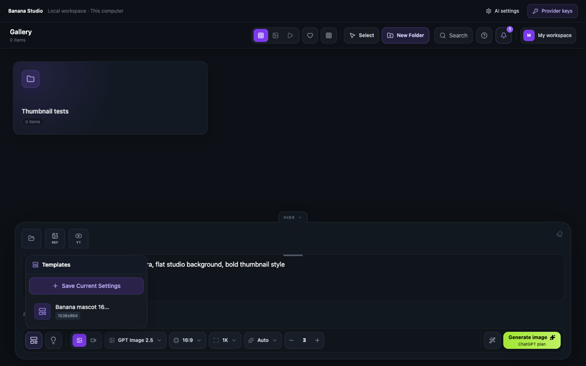
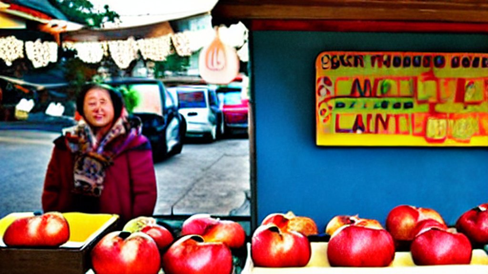

NEXA Fellowship · Week 3
Week 3 work
A repo review, a prompt benchmark on 10 models and a benchmark review. Numbers come from my own result files; what I did not measure is marked as such.
Repo review: banana-studio
Banana Studio is an open-source studio for generating images and video with your own API key. I ran its test suite (725 tests, 723 passed, 2 skipped) and used the interface without a paid key.
I found that the README download links pointed to v0.1.2 while the latest release was v0.1.10, and that on an empty gallery the Create Folder button sits behind the generation bar at 1440x900.


Prompt benchmark: 10 questions, 10 models
I took 10 questions from the MIHENK open set and asked each model three times; the Claude models ran once each. Accuracy is the median over runs.
| Model | Accuracy per run | Median accuracy | Format (raw, strict) | Median time (s) | Cost |
|---|---|---|---|---|---|
| qwen3-8b | 8/10, 7/10, 7/10 | 7/10 | 3/3 | 20.6 | no extra cost (local) |
| dolphin3-8b | 5/10, 4/10, 5/10 | 5/10 | 3/3 | 8.5 | no extra cost (local) |
| qwen3.5-abliterated-9b | 4/10, 4/10, 7/10 | 4/10 | 3/3 | 23.9 | no extra cost (local) |
| gemini-4-argon-medium | 10/10, 10/10, 10/10 | 10/10 | 3/3 | 11.7 | no extra cost (subscription) |
| gemini-3.8-flash-low | 10/10, 10/10, 10/10 | 10/10 | 3/3 | 6.0 | no extra cost (subscription) |
| gemini-4-neon-medium | 10/10, 10/10, 10/10 | 10/10 | 3/3 | 12.5 | no extra cost (subscription) |
| gpt-oss-120b-medium | 10/10, 9/10, 9/10 | 9/10 | 3/3 | 8.7 | no extra cost (subscription) |
| codex | Not run: usage limit was full | ||||
| claude-haiku | 9/10 (1 run) | 9/10 | 1/1 | not measured | not stated |
| claude-sonnet | 8/10 (1 run) | 8/10 | 1/1 | not measured | not stated |
| claude-opus | 10/10 (1 run) | 10/10 | 1/1 | not measured | not stated |
Time is wall-clock time of the whole call; local runs include loading the model each time. Claude models ran as Claude Code subagents with their own system prompt.
The three Gemini models scored 10/10 in all three runs and gpt-oss-120b-medium had a median of 9/10; among local models qwen3-8b reached 7/10, and qwen3.5-abliterated-9b moved between 4 and 7 across runs. Only 10 questions and one prompt were used, and the hardest level in the MIHENK open set is L2, so the top models hit the ceiling and could not be told apart.
- MIHENK Turkish and English, 800 questions, 20 disciplines
- TurkishMMLU Turkish multiple-choice exam benchmark
Image and video models, same prompt
I gave one prompt to three local image models and two local video models. Same seed (42), 16:9, no negative prompt, one try each, no cherry-picking. The prompt tests object counts, colours, readable text, a smiling face and, for video, a waving hand.
A wide shot of a small street market stall at dusk. Exactly three red apples and two yellow lemons sit on a wooden table. A wooden sign above the stall reads "OPEN" in white capital letters. A smiling woman in a blue apron stands behind the table and waves her right hand. Warm lantern light, shallow depth of field.
Images



Video
Scores
Scores are my first assessment on a 1 to 5 scale per criterion; I still need to check the outputs myself and correct them.
| Model | Size | Steps | Fidelity | Text and face | Consistency | Cost | Total |
|---|---|---|---|---|---|---|---|
| SDXL-Turbo | 1024x576 | 4 | 2 | 2 | 4 | 4* | 12/20 (60%) |
| SDXL base | 1024x576 | 30 | 2 | 1 | 3 | 3* | 9/20 (45%) |
| SD 1.5 | 512x288 | 25 | 2 | 1 | 2 | 5 | 10/20 (50%) |
* Timing was lost when the Mac restarted, so the cost score was estimated from the step count (4 vs 30 steps). Not verified. SD 1.5 took 22.5 s including model loading.
| Model | Size | Steps | Frames | Time | Fidelity | Text and face | Motion | Consistency | Cost | Total |
|---|---|---|---|---|---|---|---|---|---|---|
| Zeroscope v2 576w | 576x320 | 12 | 8 frames, 8 fps (1 s) | 469.6 s (7.8 min) | 2 | 1 | 1 | 3 | 3 | 10/25 (40%) |
| AnimateDiff (SD 1.5) | 512x288 | 12 | 8 frames, 8 fps (1 s) | 545.6 s (9.1 min) | 1 | 1 | 1 | 1 | 3 | 7/25 (28%) |
AnimateDiff finished on the fifth try: the GPU ran out of memory twice, one CPU run hit the time limit, and once the memory watchdog stopped it while decoding frames. On the fifth try, generation and frame decoding ran as two separate processes. 8 frames and 12 steps was the highest setting that fit on this 16 GB Mac, and the model is trained for 16 frames; the output is coloured noise. FLUX was never tried. Both videos are only 1 second long, and the scores come from looking at frames, not from watching the files.
Best: SDXL-Turbo (12/20). It has the evening market, smiling women in blue aprons and natural faces. The sign "OPEN" is missing, there are two women, and the apple and lemon counts are wrong. Worst: SDXL base (9/20). It drifted to a cartoon style, has no sign, two giant apples float in the air and the face looks flat and artificial.
None of the local models wrote "OPEN" correctly. The Zeroscope video barely changes between frames and nobody waves; the AnimateDiff output is noise and no scene can be made out. Small local models are not in the same class as cloud models, and this is one prompt with one seed, so it is not a general ranking.
For video, the best is Zeroscope (10/25) and the worst is AnimateDiff (7/25).
Cloud, not scored
The Canva image was generated once from my own account; I only have a 200x112 preview, so I did not score it. In that preview the "OPEN" sign is readable and the woman waves. Seed and steps cannot be set in Canva, so the conditions differ from the local models.
Benchmark review: SWE-bench Verified
SWE-bench Verified asks a model to fix a real GitHub issue by writing a patch; it has 500 tasks, all from Python projects. A task counts as solved only if the tests that were failing now pass and the tests that were passing still pass.
Its reliability is debated: news reports say OpenAI stopped reporting it in February 2026 because of faulty tests and data leakage. I read this only in secondary sources and did not verify it.
Note: 1in8b.life
In 1in8b.life you cannot choose where you are born, and each life follows real country statistics. I played four lives; two ended at age 2 and age 0, and every event shows a sourced data line, which I want to reuse in Exam Plan and in benchmark tables.